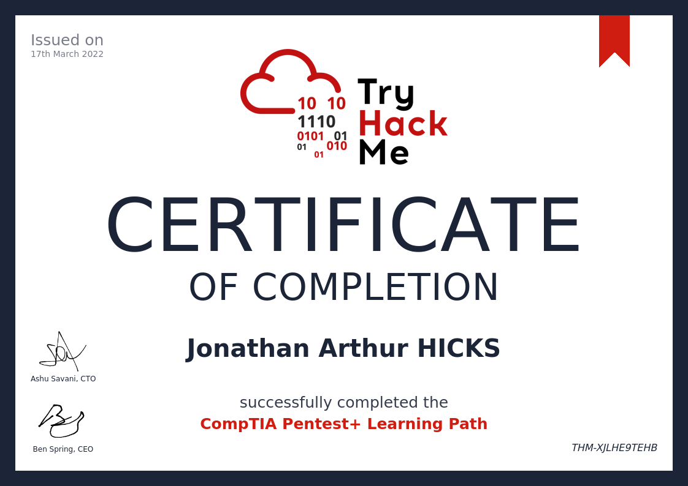
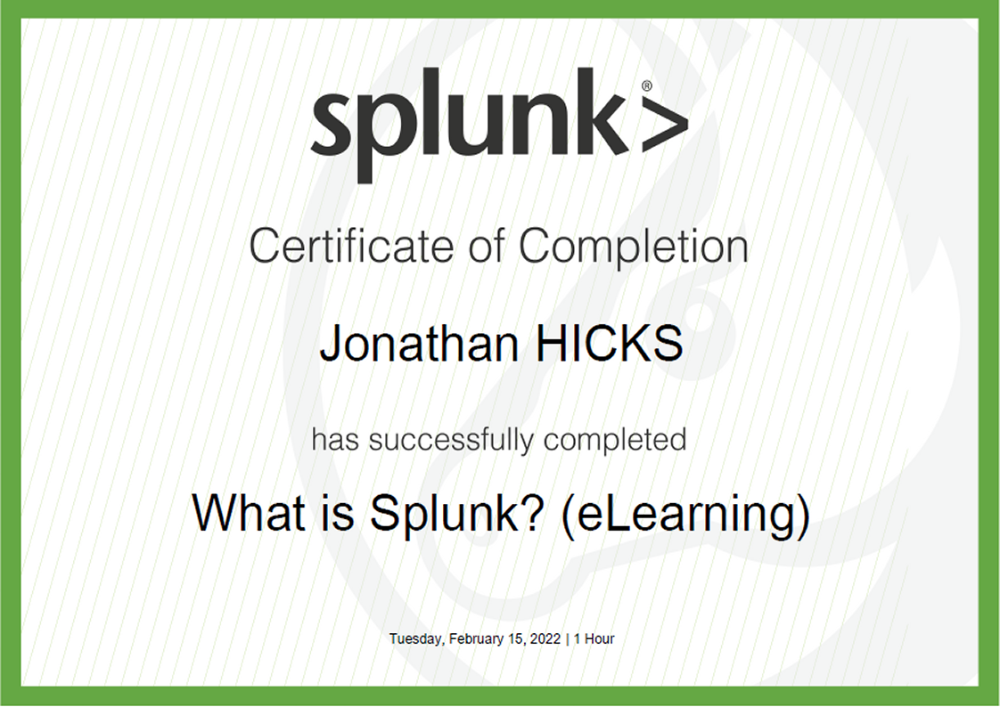

Cyber Security Skills.
Details on Concepts, Tools and Resources used in the field of Cyber Security.
Cyber Security Concepts.
Overview - Cyber Security can be seen as ongoing answer to cyber-crime which can come in many different forms from Ransomware to stealing sensitive data and just about everything else in between. The threat in this view could be state sponsored operators, criminal gangs, political activists or just someone in their bedroom.
CIA - Confidentiality - data should be protected from unauthorized access or misuse. Integrity - data must not be altered by unauthorized people. Availability - the data should be available when authorized users want to use it.
Open Systems Interconnection Model - Designed to allow different systems to talk with one another the OSI model is fundamental to understanding many parts of cyber security.
Internet Protocol (IP) - The address used when machines communicate.
Transmission Control Protocol (TCP) - Ports, Handshakes.
Tools of the Trade
Linux - the operating system we will be using to interface with many of the tools.
Windows Active Directory - windows systems.
Ping - checks an IP address to see if it is active.
Nmap - will provide a list of ports and services that are running on and active IP.
Dirb - to look for hidden directories.
Kerbrute - an enumeration tool to brute-force and enumerate valid active-directoriy users in windows domains.
Enum4Linux - to identify user accounts.
Hydra - to brute force weak passwords.
John - to break encryption on a file.
Burp Suite - for web application testing.
Metasploit - A framework for penetration testing.
Nessus - A vulnerability scanner.
Splunk - An analysis tool for security information and event management (SIEM).
Resources
OWASP - Open Web Application Security Project. A non-profit foundation that works to improve the security of software. The OWASP Top Ten highlights the most critical security risks to web applications.
ISO 27001 - International Organization for Standardization, 27001 Information Security Management.
NCSC - National Cyber Security Centre - UK accreditation.
Learning Places
University of the West of England - Current Boot Camp Course.
TryHackMe - In depth learning place for Cyber skills. A vast number of virtual rooms where you can practice and test your skills in safety.
xxx 
W3Schools - Online Web Tutorials, including Cyber Security.
Splunk Education - The leading software platform for data analytics provides an education path.

Open University - Courses including a couple on Cyber Security. xxx
xxx